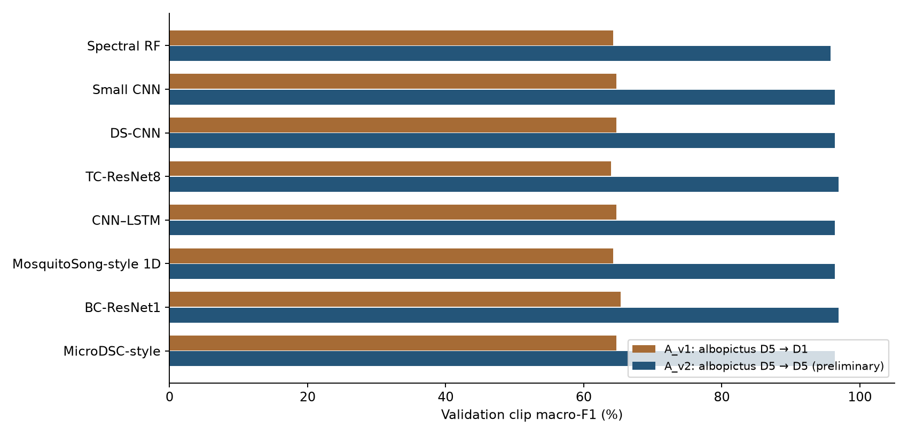
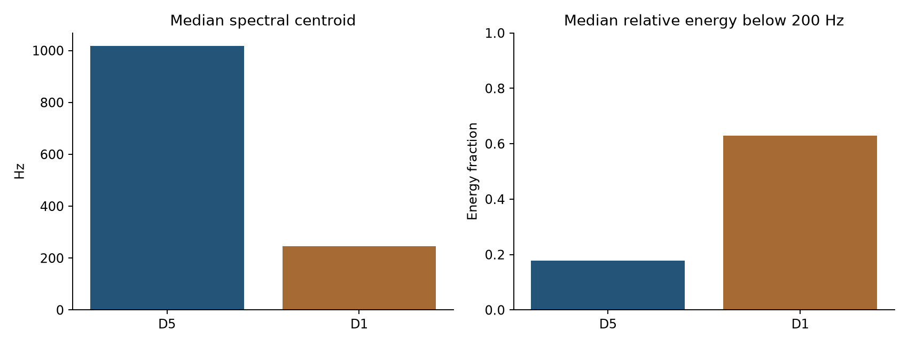

VGU · Edge AI · Weekly Progress Report
The fourth reporting stage investigates a failure that is obscured by pooled performance: every learned baseline assigns zero recall to Aedes albopictus on the A_v1 validation population. The experiment trains albopictus on D5 and evaluates it on D1. The later A_v2 experiment instead uses D5 in both training and validation and obtains much higher scores. These outcomes expose a research gap between recognizing labels within a familiar acquisition domain and retaining recognition when the class appears under different recording conditions.
The report distinguishes the observed failure, supporting acoustic diagnostics, hypotheses that remain untested, and the narrower conclusion supported by the revised experiment. It also includes the subsequent split audit, because that audit limits how confidently the high within-domain scores can be interpreted. The purpose is to explain the change in experimental scope without presenting it as a solution to domain shift.
A_v1 uses class-conditional domain holdouts. D1 is unseen for albopictus during training, but D1 appears for other species. Thus D5-to-D1 is a class-specific acquisition shift; it is not a globally unseen-domain evaluation of the entire classifier. The validation population contains 211 eligible clips and 11,952 complete windows, including 67 albopictus clips and 164 albopictus windows. These 67 clips map to one known source proxy, which limits the breadth of the transfer claim.
Training contains 1,879 eligible clips and 41,837 windows. Albopictus contributes 1,374 training clips from D5 and 4,122 windows. Each clip is approximately 0.625 s long. In contrast, several other species contain much longer recordings, making their window contribution disproportionate to their clip counts. The main score is clip macro-F1, with window metrics reported separately.
| Model | Train recall (%) | D1 recall (%) | D1 clips called minimus |
|---|---|---|---|
| Spectral RF | 100.00 | 0.00 | 67 |
| Small CNN | 100.00 | 0.00 | 67 |
| DS-CNN | 100.00 | 0.00 | 67 |
| TC-ResNet8 | 99.93 | 0.00 | 63 |
| CNN–LSTM | 99.85 | 0.00 | 67 |
| MosquitoSong-style 1D | 99.64 | 0.00 | 67 |
| BC-ResNet1 | 100.00 | 0.00 | 67 |
| MicroDSC-style | 100.00 | 0.00 | 67 |
All eight learned models have albopictus validation recall of 0% at both clip and window levels. This agreement spans a spectral random forest, log-mel convolutional models, temporal and recurrent models, and a raw-waveform model. It therefore weakens an explanation based solely on one architecture's optimization failure, although it does not identify a unique cause shared by the pipelines.
For seven models, all 67 albopictus validation clips are classified as minimus. TC-ResNet8 predicts minimus for 63 of the 67. The error is systematic rather than a small collection of uncertain boundary cases. DS-CNN has mean albopictus probability about 0.0005 and mean minimus probability about 0.9937 on these clips; 66 of 67 receive a minimus score above 0.95. These are model scores, not calibrated probabilities of biological identity.
Training recall for albopictus is approximately 99.64–100% across the models. The contrast shows that the selected D5 training samples are readily separable within the fitted training distribution, while that success does not transfer to the selected D1 validation source. High training recognition provides no assurance that the learned distinction is invariant to the acquisition change.
The best A_v1 clip macro-F1 is 65.32%, achieved by BC-ResNet1. The same model has 69.15% window macro-F1 and 93.33% window accuracy. Those three numbers answer different questions. Albopictus contributes only 164 of 11,952 validation windows, approximately 1.37%, but 67 of 211 clips, approximately 31.75%. A model can therefore have high window accuracy while failing every window from this class.
| Model | A_v1 clip F1 (%) | A_v2 clip F1 (%) | A_v2 window F1 (%) |
|---|---|---|---|
| Spectral RF | 64.23 | 95.77 | 94.37 |
| Small CNN | 64.75 | 96.36 | 92.14 |
| DS-CNN | 64.75 | 96.36 | 94.53 |
| TC-ResNet8 | 63.95 | 96.94 | 93.73 |
| CNN–LSTM | 64.75 | 96.36 | 90.79 |
| MosquitoSong-style 1D | 64.23 | 96.35 | 89.28 |
| BC-ResNet1 | 65.32 | 96.94 | 94.66 |
| MicroDSC-style | 64.75 | 96.36 | 93.96 |

Macro-F1 reduces the direct dominance of class counts when combining class-specific scores, but it cannot repair a mismatch in recording conditions or provide independence between related excerpts. Per-class recall and the domain composition remain essential to interpreting the aggregate result.
The full diagnostic run 4080bfe9facd7936 rechecks predictions and measures one central A_v1 window per clip. Spectral comparisons normalize total energy, allowing relative frequency content to be compared without equating the absolute signal levels. The summaries describe these selected segments; they are not exhaustive activity annotations for the full recordings.
| Domain | Centroid Hz | Energy <200 Hz | Energy 1–4 kHz | Periodicity confidence |
|---|---|---|---|---|
| D5 | 1,016.78 | 0.18 | 0.42 | 0.93 |
| D1 | 245.43 | 0.63 | 0.02 | 0.27 |
The median albopictus spectral centroid decreases from 1,016.8 Hz in D5 training examples to 245.4 Hz in D1 validation examples. The median energy fraction below 200 Hz increases from approximately 0.1785 to 0.6289, while the 1–4 kHz fraction decreases from 0.4155 to 0.0177. Periodicity confidence also differs substantially. These measurements establish an acoustic distribution difference in the inspected windows. A centroid is not the fundamental wingbeat frequency, and a low-frequency concentration does not identify its physical source.

Recording-source confounding is a plausible explanation because species and acquisition domain are strongly associated. The model may use sensor response, background structure, processing artifacts, signal level, biological variation, or a combination of these. The observation that different architectures fail in the same direction supports investigating shared data conditions before increasing model complexity.
The available metadata do not identify which mechanism causes the errors. D5 sensor modality and biological conditions are not fully mapped. The D1 albopictus population includes known female, male, and unknown-sex recordings associated with Alcatel 4009X metadata, whereas D5 sex and device entries are unknown. This asymmetry prevents attributing the failure specifically to sex, temperature, microphone response, or label quality.
The systematic minimus prediction may reflect similarity to cues that the classifier associates with minimus, but the prediction itself is not evidence that the clips contain that species. It also does not prove that background noise is the decisive feature. A causal claim would require a controlled comparison that changes one relevant factor while preserving the biological and recording population as far as possible.
The research gap is therefore operationally specific: the current pipeline has not demonstrated a species representation that transfers from the available D5 albopictus recordings to the available D1 source. The experiment does not establish that cross-domain mosquito recognition is impossible, nor that a particular adaptation method would resolve this case.
The next saved experiment narrows the question to within-D5 validation for albopictus. A_v2 retains the 1,374 selected D5 clips but assigns 1,099 to training and 275 to validation, using seed 42. The earlier D1 albopictus population moves to a diagnostic partition and is not consumed by baseline B. The assignments for the other species and the custom test population remain as recorded in the A_v2 preparation.
This decision pauses the cross-domain problem to determine whether the pipeline learns effectively under a more familiar class-specific domain. It is a change of scope. It does not correct the D5-to-D1 failure or demonstrate that the unseen-domain research gap has been closed. Because the redesign follows observation of the original failure, it must remain explicitly documented.
| Partition | A_v1 clips | A_v1 windows | A_v2 clips | A_v2 windows |
|---|---|---|---|---|
| Training | 1,879 | 41,837 | 1,604 | 41,012 |
| Validation | 211 | 11,952 | 419 | 12,613 |
A_v2 has 1,604 eligible training clips and 41,012 windows, with 419 eligible validation clips and 12,613 windows. All 275 validation albopictus clips are from D5. The full run 3fbd55b9b3895b9c uses the same family of eight baselines, unweighted cross-entropy, natural sampling, no augmentation, and seed 42. It remains a validation experiment, with best neural checkpoints selected on validation clip macro-F1.
Clip macro-F1 ranges from 95.77% for the spectral forest to 96.94% for BC-ResNet1 and TC-ResNet8. The latter models also reach 98.81% clip accuracy. BC-ResNet1 has the strongest window macro-F1 at 94.66%; the corresponding TC-ResNet8 score is 93.73%. Every model correctly classifies all 275 albopictus D5 validation clips.
For BC-ResNet1, the observed clip macro-F1 rises from 65.32% in A_v1 to 96.94% in A_v2, a numerical difference of 31.62 percentage points. This contrast does not estimate a treatment effect: the validation population, albopictus domain, and training membership change together. It demonstrates sensitivity to the experimental protocol, rather than an architecture improving by that amount.
The high clip scores also incorporate aggregation over multiple windows. A 96.94% clip macro-F1 must not be described as the recognition performance of a single 300 ms observation. Clip duration varies across species, so the amount of evidence being averaged also varies. The separate window scores are necessary for discussing a future streaming system.
The subsequent A_v2 audit reproduces the split, verifies input hashes, recomputes normalization from training windows, and recalculates the saved metrics. Those checks support the numerical correctness of the score tables. They do not establish source independence, and the waveform audit finds a concrete reason that the latter claim would be premature.
Of 69 train–validation candidate pairs rechecked from raw audio, 68 have absolute correlation at least 0.995 over aligned overlaps of one to two seconds; 39 reach at least 0.999. All involve minimus. At least 46 training clips and 44 of the 92 minimus validation clips are implicated. The 44 validation clips represent 47.83% of that class's validation population, but this does not mean that every sample in those clips is duplicated.
The audit identifies 471 validation windows lying completely within verified overlap regions and 519 touching at least one such region. The larger total of 2,587 windows contained in implicated clips must not be called entirely duplicated. This distinction prevents overstating the measured extent of dependence while acknowledging that there is direct signal evidence across the split.
One example aligns a two-second training minimus clip in D3 with a segment from a validation clip in D4 at correlation 0.999941. Another aligns one-second excerpts within D3 at 0.999843. Different domains and different file hashes therefore do not guarantee distinct source content. Gain changes, quantization, and shifted crops can evade exact-file checks.
The previous grouping rule used a very strict short-anchor threshold and missed some of these longer, highly correlated overlaps. Hence a check that constructed group IDs do not cross partitions can pass even when the groups are incomplete. The corrective action belongs in source grouping and splitting, followed by retraining; it cannot be replaced by adding a limitation sentence while treating the current validation as independent.
For albopictus D5, the supplementary audit compares all 302,225 train–validation clip pairs over 5,201 integer-sample offsets with at least 300 ms overlap. No pair reaches absolute correlation 0.995; the maximum is approximately 0.969892. This search finds no evidence of the same strong partial-waveform duplication detected for minimus within its stated search scope.
That negative finding is useful but does not certify independent D5 sessions or individual mosquitoes. D5 remains associated exclusively with albopictus in the selected train–validation pool, and the metadata do not establish how many independent biological sources support its 1,374 clips. Within-D5 recognition may therefore benefit from domain-associated cues even without detected near-duplicate waveforms.
The defensible result is twofold. First, A_v1 exposes a reproducible class-specific transfer failure: albopictus recall is zero across eight learned baselines. Second, A_v2 shows that the same broad baseline suite obtains high validation scores when albopictus is evaluated within D5, with a maximum of 96.94% clip macro-F1. The latter remains preliminary because of verified minimus overlap and unresolved source independence.
At this point the cross-domain investigation is paused rather than claimed as solved. Further model optimization should not use the current high score as a clean reference. The immediate methodological requirement is to expand waveform-link discovery, merge related clips into source components, rebuild the split, and rerun the fixed baseline recipe. Any suspect test relationships should be reviewed as data-integrity questions before final scoring, without using test predictions to select the design.
The audit cannot quantify how much the overlap elevates macro-F1. Removing only the implicated validation rows would also be inadequate: the checkpoints were selected using that validation population, the search is incomplete, and a changed split requires new training. Similarly, one seed provides no estimate of sensitivity to model initialization or partition choice.
The project's application claim remains limited to a four-class experiment on labelled audio. Neither protocol establishes rejection of environmental negatives, recognition of species outside the selected set, independent unseen-source performance, or deployment accuracy with an INMP441 microphone. Those questions remain separate evaluations after the dataset protocol is repaired.
The Week 4 companion page places the two protocol score tables beside the failure and acoustic summaries and preserves the preliminary status of A_v2. It is available at https://ancaranovik.github.io/Edge_AI_Mosquito/reports/week-04/domain-gap/ .
Local evidence: archived A_v1 full run b67e5bff23cad061; full diagnostic run 4080bfe9facd7936; A_v2 full run 3fbd55b9b3895b9c; results/A_v2/split_audit/report.html and its verified_cross_split_waveforms.csv, recomputed_metrics.csv, split_domain_counts.csv, and D5_exhaustive_summary.json. Numerical scores are validation results, not official challenge or held-out test results. This report summarizes saved analyses and does not perform additional training.
Public dataset context: BioDCASE 2026 Zenodo v2, https://zenodo.org/records/20478577 . The empirical failure and the overlap findings reported here derive from the local project artifacts, not from the release description.